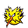

Olivine
Eruption + Assurance
VS  lead Eruption + Explosion into Hyper Voice + Earthquake
lead Eruption + Explosion into Hyper Voice + Earthquake
Eruption + Assurance
VS  lead Eruption + Explosion into Hyper Voice + Earthquake
lead Eruption + Explosion into Hyper Voice + Earthquake
Water Spout + Blizzard
VS lead, you might use XSpeed on Blastoise in its turn or risk the Rock Slide Flinch from Scarf
VS  use Ice Beam on 
Hyper Voice + Earthquake
VS use X.Atk on Garchomp using Togekiss turn
Hyper Voice + Earthquake
Sub Typhlosion if Garchomp faints
Togekiss first slot, Garchomp second slot. Ensures Togekiss positions at the left
Explosion + Dragon Claw into Eruption + Hyper Voice
VS follow up with Water Spout + Eruption
VS Explosion + Garchomp hard switches into Blastoise. Follow up with Eruption + Earthquake into Hyper Voice + Earthquake
VS Explosion + Sunny Day into Eruption + Water Spout
Water Spout + Explosion into Blizzard + Hyper Voice